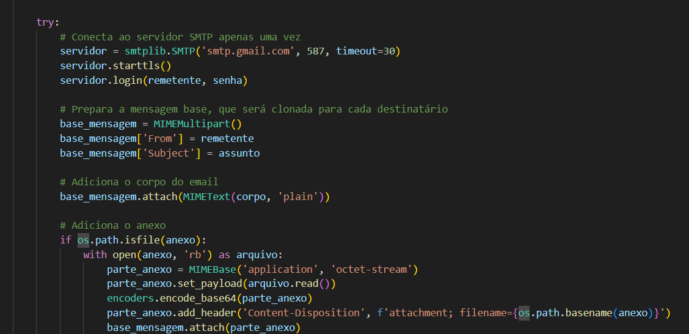
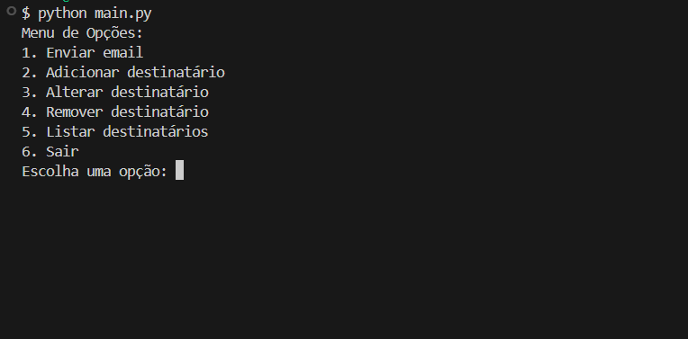
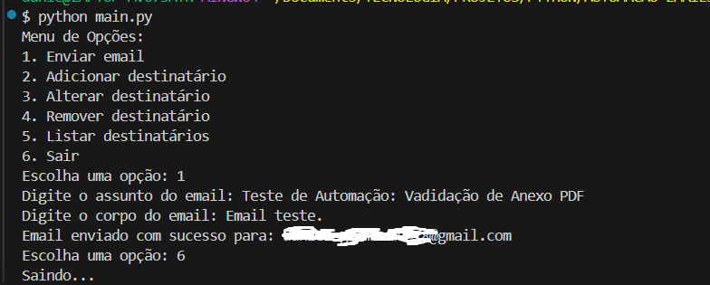

Python Email Automation
Backend/CLI
Python
SMTP (smtplib)
Variáveis de Ambiente (.env)
Visão Geral
Desenvolvimento de um script Python robusto para automação de envio de e-mails em massa, conectando-se ao servidor SMTP do Gmail. O projeto foca em segurança (uso de variáveis de ambiente), usabilidade (menu interativo via CLI) e tratamento de erros.
Principais Aprendizados: Refatoração de código para garantir a persistência da conexão SMTP, solução de erros de múltiplos cabeçalhos 'To', e aprimoramento da experiência do usuário com inputs dinâmicos de Assunto e Corpo do Email. Este projeto fez parte da Imersão Python da Escola Hashtag.
Topo
Galeria


